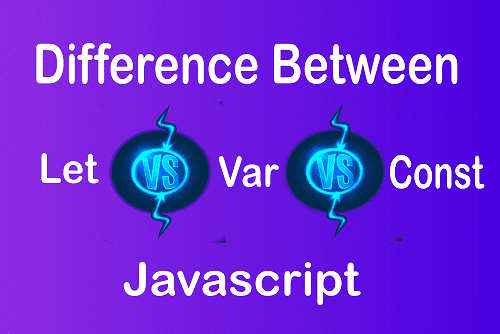

Introduction

JavaScript is a powerful and flexible programming language. One of the essential concepts to understand as a JavaScript developer is how to declare variables. With the introduction of ES6 (ECMAScript 2015), JavaScript introduced two new ways of declaring variables: let and const, alongside the traditional var.
In this blog, we’ll explore the differences between these three and understand when to use each one.
1. The Classic var
var is the original way of declaring variables in JavaScript. However, it comes with some quirks that can lead to unintended behavior.
Key Features of var:
- Function Scope: Variables declared with var are scoped to the nearest function. If declared outside any function, they are global.
- Hoisting: Variables declared with var are hoisted to the top of their scope and initialized as undefined. This means you can use the variable even before declaring it.
- No Block Scope: var doesn’t recognize block-level scope (e.g., within if or for blocks).
Example:
var X = 45;
console.log("I am Outside X" , X);
var X = 78;
console.log("I am Outside X" , X);
let demoFunction = function(){
console.log("I am Inside X",X);
}
demoFunction();
Console
I am Outside X 45I am Outside X 78
I am Inside X 78
2. Introducing let
With ES6, let was introduced to address the limitations of var.
Key Features of var:
- Block Scope: Variables declared with let are limited to the block in which they are defined.
- No Hoisting: While let variables are technically hoisted, they are not initialized, and accessing them before declaration results in a ReferenceError.
- Reassignable:You can reassign values to variables declared with let.
Example:
let x = 45;
console.log("I am outside X", x);
// let x = 30; Uncaught SyntaxError: Identifier 'x' has already been declared
let demoFunction = function(){
console.log("I am Inside X",x);
}
demoFunction();
Console
I am outside X 45I am Inside X 45
3. The Immutable const
const is another addition to JavaScript from ES6. It’s used to declare variables that should never be reassigned.
Key Features of var:
- Block Scope: Like let, const variables are block-scoped.
- Immutable References: You cannot reassign a new value to a const variable. However, the content of objects or arrays declared with const can still be modified.
- No Hoisting: Similar to let, accessing a const variable before declaration results in a ReferenceError.
Example:
const x = 45;
console.log("I am outside X", x);
//const x = 30; //Uncaught SyntaxError: Identifier 'x' has already been declared
//x=30; Uncaught TypeError: Assignment to constant variable.
let demoFunction = function(){
console.log("I am Inside X",x);
}
demoFunction();
Console
I am outside X 45I am Inside X 45
Conclusion
Understanding the differences between var, let, and const is crucial for writing clean, modern JavaScript. With let and const, JavaScript has become more robust and less prone to bugs caused by scoping issues. By following best practices, you can write code that’s easier to understand and maintain. Happy coding! 🎉